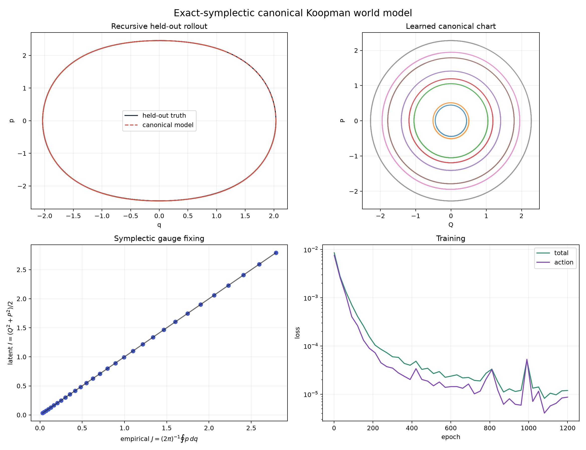

A canonical world model, not another unconstrained rollout net.
supported_on_held_out_trajectories
The model learns an exactly invertible symplectic map from physical (q,p) into latent (Q,P). There, motion is an action-conditioned rotation generated by a learned scalar Hamiltonian h(I). Its inverse returns the prediction to physical coordinates.

Hard checks
- PASS — held out rollout is accurate
- PASS — beats persistence rollout
- PASS — observed orbits have stable action
- PASS — koopman phase law fits observed steps
- PASS — map is numerically invertible
- PASS — map is numerically symplectic
- PASS — latent action is exactly conserved by model
- PASS — symplectic gauge matches empirical action
- PASS — learned hamiltonian matches frequency
- PASS — chart circularizes held out orbits
- PASS — observed phase step is nearly uniform
- PASS — complete latent conjugacy fits observed steps
- PASS — learned hamiltonian matches reference shape
What the numbers mean
Held-out recursive rollout RMSE: 0.0270. Observed Koopman phase residual: 0.0002. Radial chart residual: 0.0026. Phase-step residual: 0.0060. Complete conjugacy residual: 0.0003. Numerical symplectic defect: 2.38e-07. Empirical-action affine R²: 1.0000; slope: 0.9998. Learned-h frequency error: 0.926%.
Why this is Hamilton–Jacobi structure
The canonical map is a learned local generating transformation. In the latent chart, H becomes h(I), the angle advances at ω(I)=dh/dI, and exp(ikφ) is a fiberwise Koopman eigenfunction. Symplecticity fixes the phase-space area scale; radial and phase-law residuals test whether the learned orbit is actually a circle with uniform angle advance at that scale.
Boundary
This certificate covers complete held-out trajectories from autonomous, conservative, periodic one-degree-of-freedom data inside the observed action range. A single state's action-range check is weaker than these orbit residuals. It does not yet cover separatrix charts, multi-frequency tori, forcing, dissipation, impacts, or HJB control.
Artifacts: model.pt, manifest.json, and
action-audit/manifest.json.